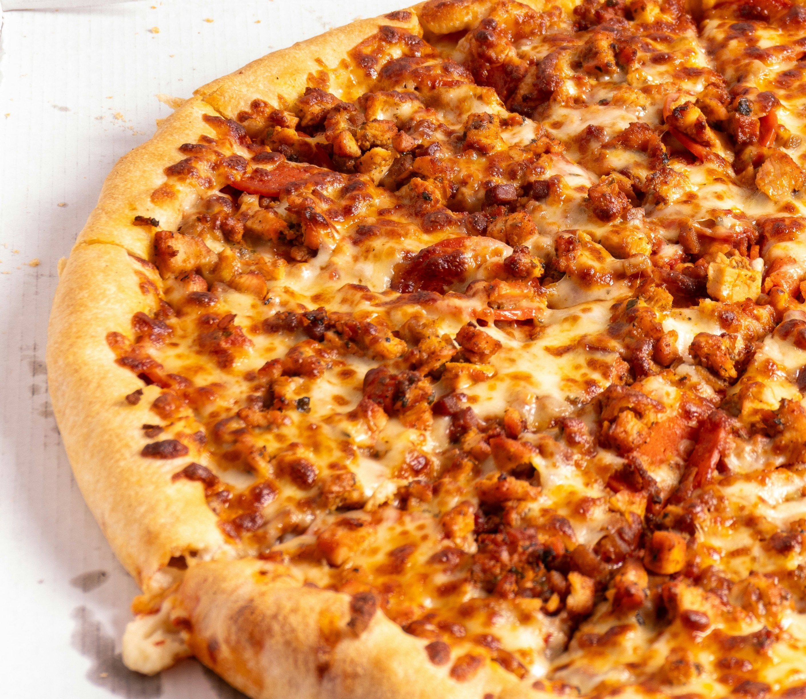

Home
BBQ Chicken Pizza

This spicy twist on BBQ chicken pizza uses store-bought
crust for an easy weeknight meal. Reviewers consistently praise this recipe’s
bold flavor, easy prep, and tasty results.
“Used my cast iron and it turned out great …
going to make this again.”
—Allrecipes member C Fisher
Ingredients
- 1 (12 inch) pre-baked pizza crust
- 1 cup spicy barbeque sauce
- 2 skinless boneless chicken breast halves, cooked and cubed
- 1 cup sliced pepperoncini peppers
- 1 cup chopped red onion
- ½ cup chopped fresh cilantro
- 2 cups shredded Colby-Jack cheese
Steps
- Gather all ingredients. Preheat the oven to 350 degrees F (175 degrees C).
- Place pizza crust on a baking sheet. Spread barbeque sauce on crust.
- Top with chicken, pepperoncini peppers, onion, and cilantro.
- Cover with Colby-Jack cheese.
- Bake in the preheated oven until cheese is melted and bubbly,
about 15 minutes.
- Serve and enjoy!